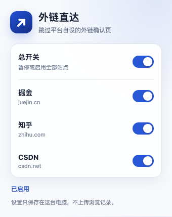
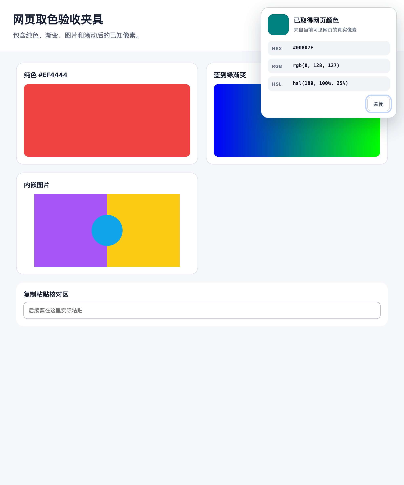
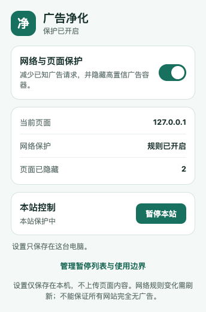

01
Direct Link

Restores redirect links on Juejin, Zhihu, and CSDN with global and per-site controls.
Open repository for Direct LinkOpen-source Agent Skill
Turn a plain-language idea into a working Chrome extension, test it through the real browser entry point, and prepare it for the Chrome Web Store.
Use $browser-extension-launch to build
a Chrome extension that saves selected
sentences and keeps them after reopening.
I do not program. Start with a local version.One guided path
The user makes product decisions. The agent manages implementation details, evidence, and recovery.
Built with the workflow
Each repository includes a loadable extension, development history, final report, and documented verification boundaries.
01

Restores redirect links on Juejin, Zhihu, and CSDN with global and per-site controls.
Open repository for Direct Link02

Samples visible page pixels, converts color formats, copies values, and keeps a local color history.
Open repository for Page Color Picker03

Blocks a bounded set of ad requests and offers reversible cleanup, site pause, and an allowlist.
Open repository for Quiet WebInstall
Installation is verified with Codex, Claude Code, Cursor, GitHub Copilot, and OpenCode. Skill CLI discovers the root skill and installs the complete folder for each selected agent.
Skill CLI
npx skills add xiehuan123/browser-extension-launch \
--skill browser-extension-launch \
--agent codex claude-code cursor github-copilot opencodenpm installer
npx browser-extension-launch installGit
git clone https://github.com/xiehuan123/browser-extension-launch.git \
~/.codex/skills/browser-extension-launchAdd -g for a user-level install. Runtime delivery also requires project file access, local commands, and a controlled browser provider capable of loading extensions.